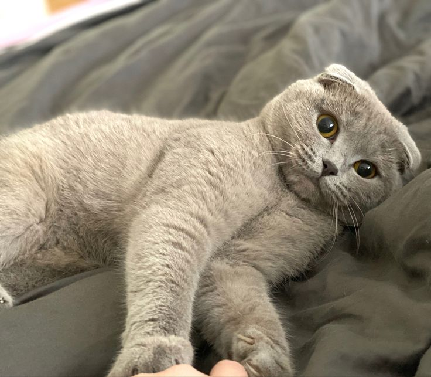
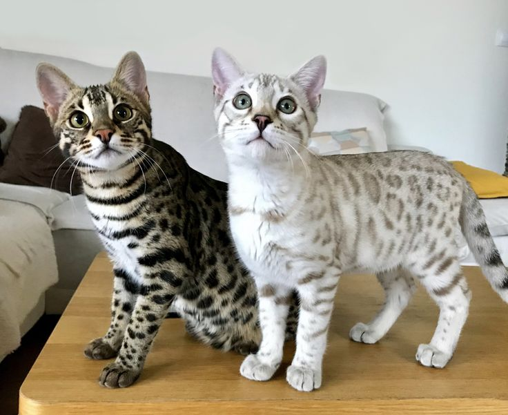
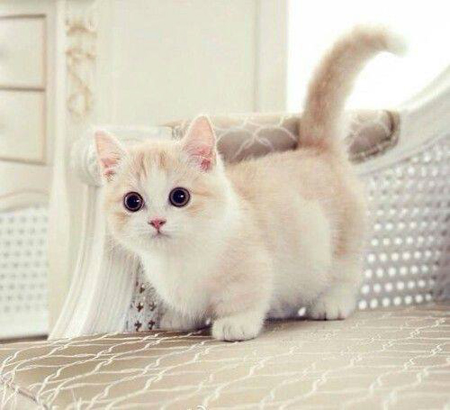

tr>
| ✧.* Your Store For Your Favorite Cat Breeds ✧.* |
| Pictures |
Breed |
Get To Know Them Better !! |
|  |
ღScottish Foldsღ |
.ೃ࿐ The Scottish Fold is my favorite breed of cats !!! This breed is an affecionate and easy to get along with. These cats are shorthairs, and they come in several colors (white, black, chocolate, lilac, etc.). The Scottish Folds have a life span of 11-14 years. Although, due to the fact that their ears are folded (which isn't rlly normal) this breed requires more medical attention than other breeds. |
 |
ღRagdollsღ |
.ೃ࿐ Ragdoll is another one of my favorites!!! Ragdolls have longcoats which means that grooming/combing should be done more often. Their coat requires lots of attention. This breed is the curious, active cat. These breeds are great for first time cat owners. |
|  |
ღBengalღ |
.ೃ࿐ These cats have rlly beautiful coats!! They have prints similar to those of a tiger, cheetah, or leopard. These cats are very active and love fun !! These cats are considered medium-large in size. |
|  |
ღMunchkinღ |
.ೃ࿐ Munchkins are energetic and loving ! This breed is among the "dwarf breeds". This is because of their vv cute short legs !K!K! Similar to the Scottish Fold, their legs were of genetic mutation. |